Who I Am
Hello! My name is Ivan.
I'm a game developer with 8 years of professional experience in the industry.
Over the years, I've worked on both mobile and live-service games, including Cut the Rope Daily, World Poker Club, and Wheel of Fortune, collaborating with studios such as Zynga, ZeptoLab, and Scopely. My background spans full-cycle game development, long-running projects, and production environments where performance, scalability, and maintainability matter.
While I've worked in teams and large companies, I'm most driven by deep technical challenges, experimental systems, and projects where engineering and design tightly intertwine.
What I Do Now
In recent years, I became deeply focused on Data-Oriented Design (DOD) in game development. This interest led me to Unity DOTS / ECS, and eventually to starting my own long-term personal project.
Little Planet Keeper
Little Planet Keeper is a planet-scale simulation game where the player nurtures and guides tens — and potentially hundreds — of thousands of living entities on a small planet. The core goal is to sustain life on the planet for as long as possible while dealing with emergent, often chaotic behavior caused by population growth, limited resources, and environmental changes.
The project is currently in early development. I have a very raw prototype available on itch.io to demonstrate the project's direction. At the moment, I'm focused on the project's physics engine and AI systems.
This project serves several purposes for me:
- To deeply explore Data-Oriented Design and Unity DOTS in a real, complex production scenario
- To research AI systems such as need-based behavior, action chaining, and emergent decision-making in a data-oriented context
- To test how AI-assisted coding can enable a solo developer to build systems that would traditionally require a team
- To create a game that gives the player a "God-like" perspective, while also demonstrating how fragile ecosystems and overpopulation can be
- To openly share knowledge and promote data-oriented thinking in game development by lectures / demonstration videos / coding streams
Long-term, I dream of building an open educational platform where I can:
- Share development insights
- Talk through real production problems
- Give lectures on Unity, ECS, computer graphics, C#, and game architecture
 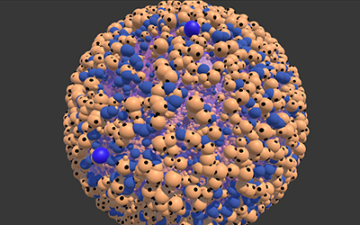
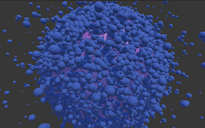
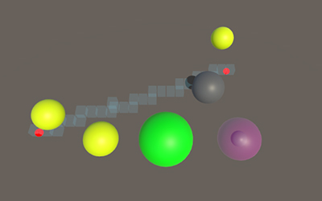
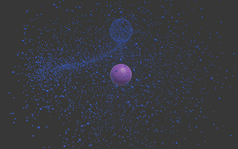
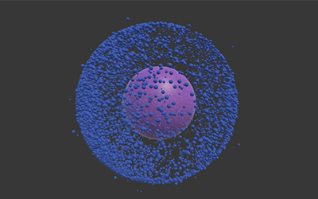
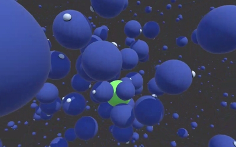
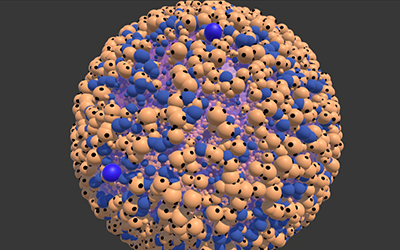
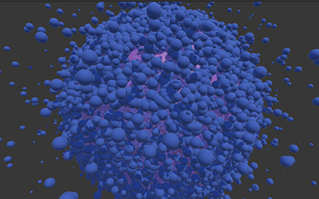
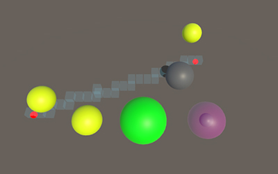
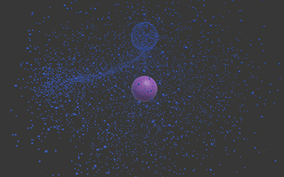
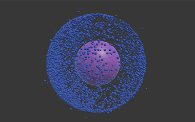
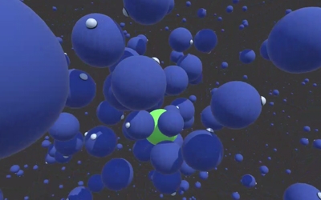
Who I Am Looking For
I am a highly focused and technically driven developer, but community building, outreach, and audience growth are not my strengths. To balance this, I'm looking for a Community Partner / Growth & Support Lead who wants to grow alongside the project.
My goal is to:
- Build a small but genuine community around the project
- Attract donation-based support (Patreon, Ko-fi, itch.io, etc.)
- Potentially fund development time, educational content, and outreach
- Reinvest part of the income into visibility (tools, hosting, promotion)
Any form of sustainable financial support would significantly increase development speed and long-term commitment.
The Ideal Person
I'm looking for someone who:
- Is genuinely excited by the project and its ideas
- Enjoys building communities from the ground up
- Understands donation-based and creator-support models
- Can communicate vision, progress, and intent clearly and honestly
- Is comfortable with open development and transparency
- Thinks long-term and values trust over hype
Deep knowledge of the game market is not required.
However, it would be a strong plus if you:
- Enjoy simulation, sandbox, or "nurturing" games
- Have one or two favorite games with systemic or emergent mechanics
- Are curious about how complex systems behave at scale
Collaboration Model
This is not a traditional employment position.
I see this role as a partnership, based on:
- Revenue or donation sharing
- Transparent goals and metrics
- Mutual trust and creative freedom
Candidate Requirements — Community / Partnership Manager (Revenue Share)
Mindset & Motivation
- Genuine interest in indie games and long-term projects
- Comfortable with slow, organic growth (not hype-driven marketing)
- Understands that community = relationships, not numbers
- Self-driven and proactive, able to work without constant supervision
- Looking for a partnership, not a short-term gig
Community & Communication
- Experience managing or participating in online communities (Discord, Reddit, forums, etc.)
- Able to start and sustain conversations, not just moderate
- Strong written communication skills
- Empathy and respect toward players and supporters
- Comfortable being a public-facing voice of the project
Fundraising & Support Awareness
- Understanding of donation-based support models (Patreon, Ko-fi, itch.io, etc.)
- Able to present donations as participation and support, not pressure
- Comfortable asking for support in a transparent and respectful way
- Understands value exchange (access, influence, closeness to development)
Content & Storytelling
- Ability to translate development progress into engaging updates
- Can explain technical or complex ideas in accessible language
- Helps shape and maintain a clear project narrative
- Knows how to keep the community informed without overpromising
Platforms & Tools
- Confident using Discord (roles, channels, moderation, events)
- Familiar with at least one outreach platform (Twitter/X, Reddit, itch.io, etc.)
- Basic organizational skills (notes, feedback summaries, simple metrics)
- No advanced marketing tools required — clarity and consistency matter more
Collaboration & Ethics
- Honest, transparent, and comfortable with open development
- Respects creative boundaries and developer focus
- Willing to give and receive feedback constructively
- Understands revenue share / donation-based collaboration
Nice to Have (Not Required)
- Experience with indie games, simulations, or systemic gameplay
- Prior involvement in Patreon, Kickstarter, or early-access projects
- Interest in game design, systems, or AI-driven gameplay
- Comfort working with a solo developer or small team
Contacts
If this project resonates with you, feel free to reach out:
- itch.io: https://petr-pes.itch.io/
- GitHub: https://github.com/zhirnovcodes
- LinkedIn: https://www.linkedin.com/in/ivan-zhirnov-664879180/
- Instagram: @petr_pes
- Telegram: @petr_pes
- E-mail: ivanzhirnov170991@outlook.com